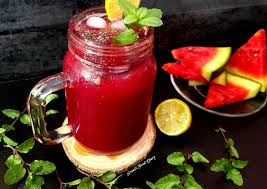

A brightly colored, tropical drink with a plate of chopped fruits, can put you in a relaxed summer mood faster
than anything else. In this quarantine times, where almost every fancy restaurant is closed; all of us have
minimal options left to satisfy our summer cravings. Today in this blog, we would teach you how to make seven
refreshing summer drinks at home to enjoy and impress your family and friends. All the drinks mentioned below
are effortless to make with a maximum of three or four ingredients required.
With frosted lemonade to glow water that is refreshing and healthy. Your whole family would love these super-cool
and best summer drinks in this heat. Choose your favorite out of these and make an entire pitcher and make your
friends go aww!
Top 5 Refreshing Summer Drinks to Make
1. Lemon Mint Mojito Mocktail

Ingredients
- 1/4 cup fresh mint
- 2 tablespoons freshly squeezed lemon juice
- 2 teaspoons Pride of India’s Coconut sugar
- Pinch of Pride of India’s Himalayan black salt
- 1/2 cup sparkling water
- Ice cubes
- Lemon slices for garnish
Directions
- Add in a sturdy glass, fresh mint leaves, freshly squeezed lemon juice, coconut sugar, and a pinch of black
salt.
- Use a muddler or the back of a spoon to gently muddle the ingredients together, releasing the mint oils.
- Fill the glass with ice cubes.
- Pour sparkling water over the ice and mint mixture. Stir gently to combine all the flavors.
- Garnish with lemon slices and a sprig of mint.
- Serve & enjoy the refreshing and lightly sweetened Lemon Mint Mojito!
This mocktail drink recipe combines the bright flavors of lemon and mint with the sweetness of coconut sugar and
a hint of savory complexity from the black salt.
2. Quick Chia Pomegranate Cooler

Ingredients
- 1 cup pomegranate juice
- 1 tablespoon Pride of India’s Black chia seeds, soaked
- 1/2 cup freshly squeezed lemon juice
- 2 cups sparkling water
- 2-3 tablespoons coconut sugar (adjust to taste)
- 1/4 teaspoon Pride of India’s chat masala
- ice cubes
- Mint leaves for garnish
Directions
- In a pitcher, combine pomegranate juice, lemon juice, sparkling water, coconut sugar, chia seeds and chat
masala. Stir well until the sugar dissolves.
- Fill glasses with ice cubes and pour the pomegranate lemonade over the ice.
- Garnish with fresh mint leaves.
- Serve immediately and enjoy the refreshing flavors!
This zesty Pomegranate Cooler with Chia and Chat Masala is an easy drink to make, offering a perfect balance of
flavors to enjoy as a refreshing summer drink.
3. Summer Peachy Mint Splash
Ingredients
- 2 ripe peaches, peeled and dice
- 1 tablespoon honey (adjust to taste)
- Juice of 1 lemon
- 1/4 teaspoon Pride of India’s Himalayan white salt
- 1/2 teaspoon Pride of India’s Dried mint
- Ice cubes
- Sparkling water or club soda
Directions
- In a blender, combine the diced peaches, honey, lemon juice, white salt, and dried mint.
- Blend until smooth.
- Fill glasses with ice cubes.
- Pour the peach mixture over the ice cubes, filling each glass about halfway.
- Top up each glass with sparkling water or club soda.
- Stir gently to combine.
- Garnish with fresh mint leaves or peach slices, if desired.
- Serve chilled and enjoy this delightful Peachy Mint Splash!
This perfect summer punch drink recipe combines the sweetness of peaches with a hint of tartness from lemon
juice, balanced by refreshing mint flavors and a touch of white salt, making it an ideal cooler for hot
days.
4. Mango Mojito Mocktail
Ingredients
- 1 ripe mango, peeled and diced
- 1/4 cup fresh mint leaves
- 2 tablespoons freshly squeezed lime juice
- 2 teaspoons sugar (adjust to taste)
- Pinch of Pride of India’s Himalayan black salt
- 1/2 cup sparkling water
- Ice cubes
- Mint sprigs and mango slices (Optional)
Directions
- In a blender, combine the diced mango, fresh mint leaves, lime juice, coconut sugar, and black salt.
- Blend until smooth.
- Fill glasses with ice cubes.
- Pour the mango mixture over the ice cubes, filling each glass about halfway.
- Top up each glass with sparkling water.
- Stir gently to combine.
- Garnish with fresh mint leaves and a slice of mango.
- Serve immediately and enjoy this refreshing Mango Mojito on a hot summer day!
This non alcoholic mocktail recipe combines the tropical sweetness of mango with the refreshing flavors of mint
and lime, making it a perfect summer cooler.
5.Lemongrass Iced Tea
Ingredients
- 4 cups water
- 5-7 Pride of India’s dried lemongrass stalks
- 2 tablespoons honey or sugar
- 2 tablespoons fresh lemon juice
- Ice cubes
- Mint sprigs and mango slices (Optional)
Directions
- Boil Water in a medium-sized pot with the added dried lemongrass stalks.
- Reduce the heat and let the lemongrass simmer for about 10-15 minutes, or until the water is fragrant and
slightly yellowish.
- Remove from heat and sweeten with honey or rock sugar( or coconut sugar)
- Allow the tea to cool first and then strain the tea into a pitcher to remove the lemongrass pieces..
- Stir in the fresh lemon juice for a refreshing citrusy kick.
- To serve, fill glasses with ice cubes and pour the chilled lemongrass tea over the ice.
- Serve after garnishing with lemon slices and some mint leaves, if desired.
This iced lemongrass tea is one of the best drink recipes, offering a refreshing citrusy zing. Sit back, relax,
and enjoy this perfect iced brew on a hot summer day!
Conclusion
Summer is the perfect time to relish the joy and recreation the season brings, especially to beat the heat with
refreshing summer drinks. Our curated list of five summer drink recipes ensures you have a flavorful companion
for every occasion. These delightful cooling beverages offer a moment of peace and cooler enjoyment, making
summer days truly special. Embrace the season with these easy-to-make beverage recipes, and let the flavors of
summer refresh and rejuvenate you!
For even more summer fun, explore additional fruity drink recipes with chia seeds and coconut sugar. These
combinations not only add a nutritious twist but also enhance the flavors of your summer drinks. Dive into the
world of tropical refreshment and experiment with new favorites to keep you cool all season long!